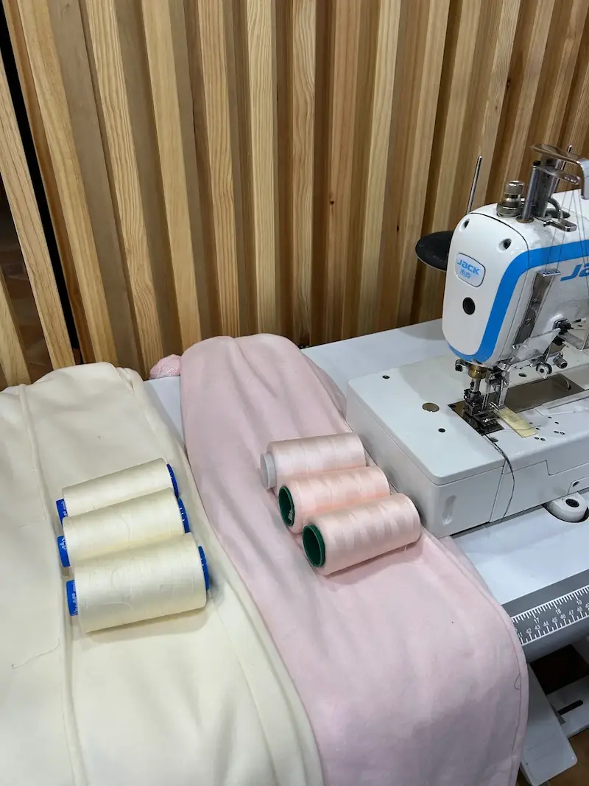
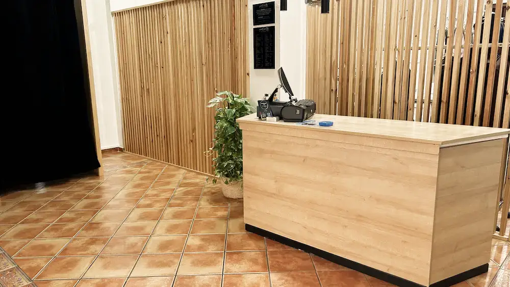
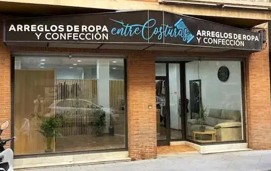

Servicios
Lo que ofrecemos
Ajuste de pantalones
Adaptamos el largo y la cintura para conseguir un ajuste perfecto.
Cambio de cremalleras
Reparamos y sustituimos cremalleras con acabados resistentes.
Arreglo de vestidos
Realizamos ajustes personalizados para cualquier tipo de vestido.
Ajuste de camisas
Mejoramos el ajuste para conseguir una prenda más cómoda y elegante.
Vestidos de flamenca y fiesta
Arreglos delicados en trajes de flamenca y vestidos de fiesta.
Trajes y bajos
Ajustamos trajes a tu medida y arreglamos bajos de cualquier prenda.

Cómo trabajamos
Traes tu prenda, la revisamos contigo, te damos un presupuesto sin compromiso y realizamos el arreglo en el menor tiempo posible.

Sobre nosotros
En Entre Costuras cuidamos cada prenda como si fuera nuestra. Nos especializamos en arreglos, ajustes y confección, ofreciendo un trato cercano y soluciones adaptadas a cada cliente.
Opiniones de clientes
Lo que dicen de nosotros
Desert F.
★★★★★“Mi traje quedó como si lo hubieran confeccionado a medida, súper satisfecha y encantada con las manos de Juan y sus compañeras.”
Google ReviewElena
★★★★★“Son espectaculares, me han realizado varios arreglos complicados, pantalones de gasa, vestido de flamenca, vestidos de fiesta y todo impecable. Grandes profesionales. Muy muy recomendable.”
Google ReviewAlmudena
★★★★★“Una atención y lugar increíble. Los trabajadores muy serviciales y las instalaciones a la altura de su buena confección.”
Google ReviewContacto
Ven a nuestro taller o escríbenos directamente
Este mapa lo sirve Google, que puede instalar cookies en tu dispositivo.
Abrir en Google Maps